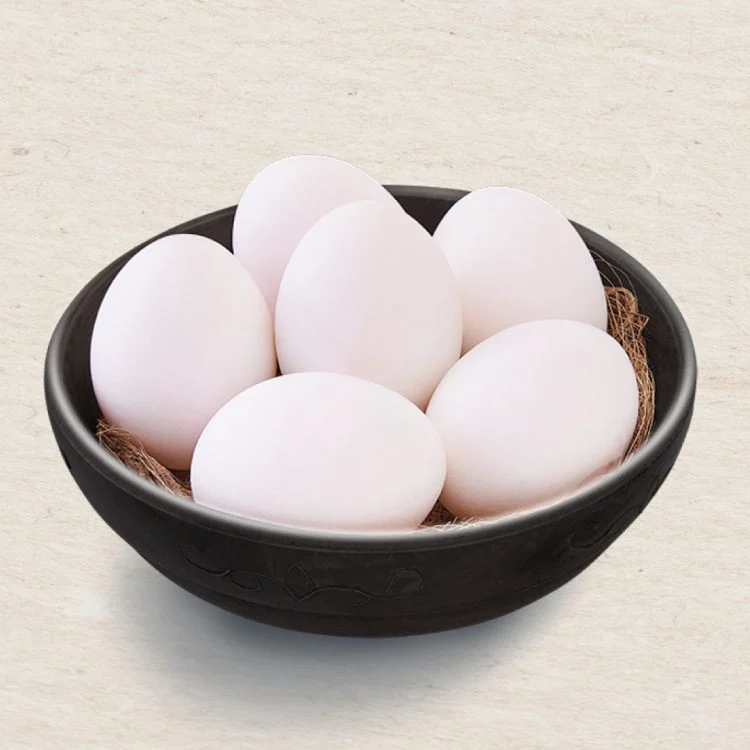
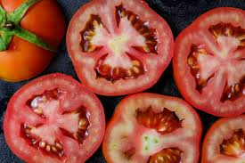
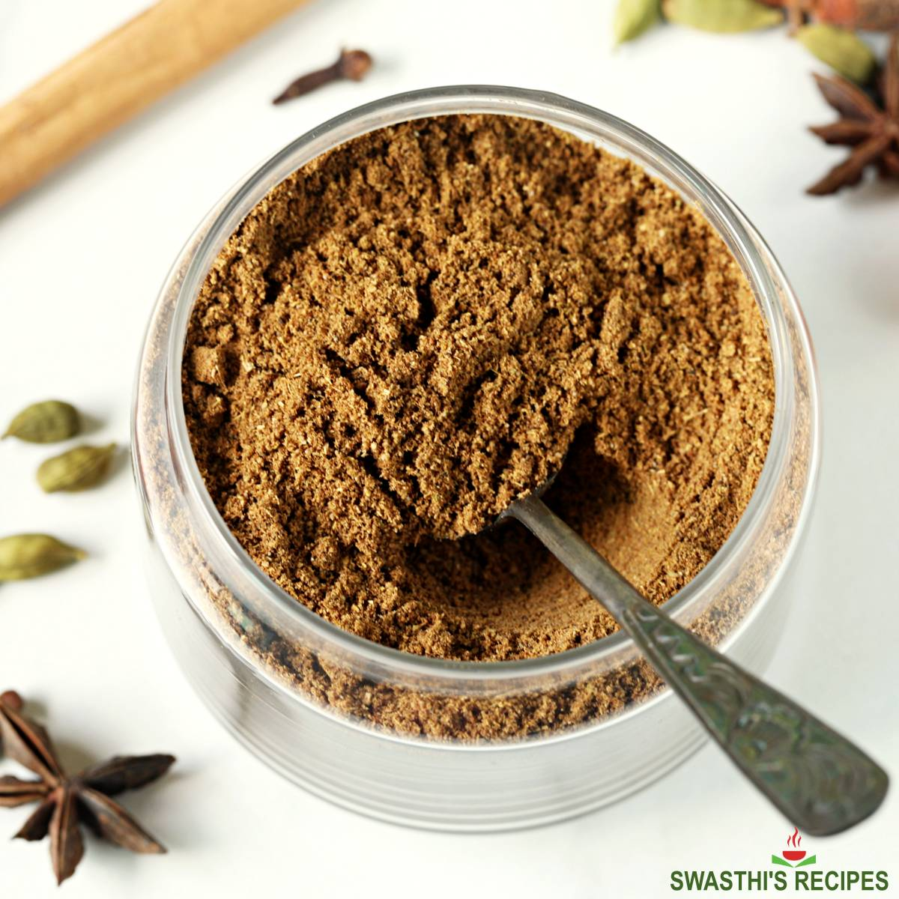
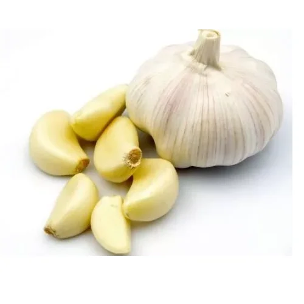

Egg Curry


Eggs 2 Onion 1
Onion 1

Tomato 1
Garam Masala 1/4
garlic 1/2 inchServing Size: 1
Servings Per Recipe: 1
Serving Size: 1 cup
Calories: 250 kcal
| Nutrient | Amount | % Daily Value * | Total Carbohydrate | 10g | 33% |
|---|---|---|
| Dietary Fiber | 3g | 12% |
| Protein | 12g | 24% |
| Total Fat | 18g | 35% |
| Total Sugars | 4g | 0-0.5% |
| Saturated Fat | 7g | 35% |
| trans Fat | 0.5g | |
| cholestrol | 285mg | 95% |
| sodium | 520mg | 95% |